# CI/CD 首次在 Linux 上使用
# 安装 Jenkins
sudo wget -O /etc/yum.repos.d/jenkins.repo \ | |
https://pkg.jenkins.io/redhat-stable/jenkins.repo | |
sudo rpm --import https://pkg.jenkins.io/redhat-stable/jenkins.io.key | |
sudo yum upgrade | |
# Add required dependencies for the jenkins package | |
sudo yum install java-11-openjdk | |
sudo yum install jenkins | |
# 如果出现 no packages | |
# 再输入第一句代码 |
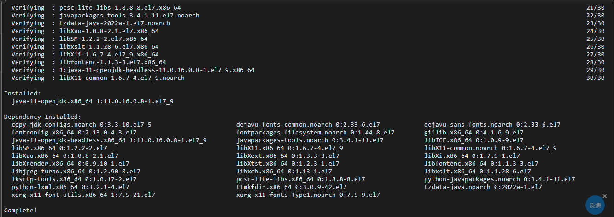
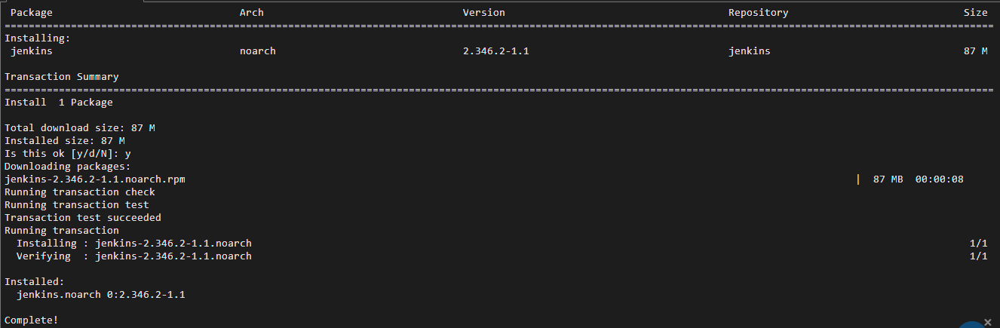
# 启动 Jenkins
service jenkins start |
# 查看状态
service jenkins status |
# 运行正常
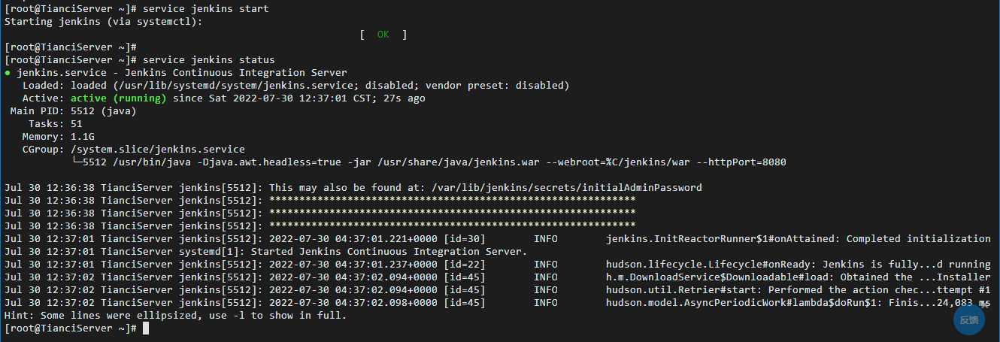
# 如果遇到这种情况
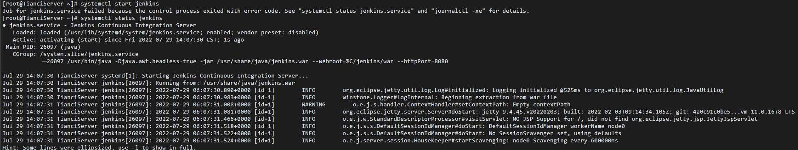
# 这个报错信息百度很久也没解决
# 后面查看内存使用率才发现原来 GitLab 吃的内存太多
# 查看内存使用率
free -h |
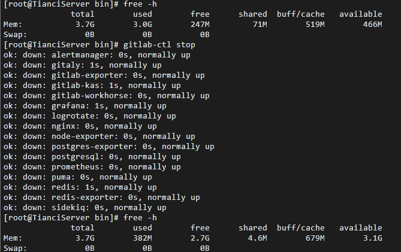
# 开启 GitLab 只剩下 247M 内存，关闭之后剩 2.7G
# 然后重启 Jenkins 就可以正常打开了
# 输入以下命令即可将密码打印在控制台
sudo cat /var/lib/jenkins/secrets/initialAdminPassword |
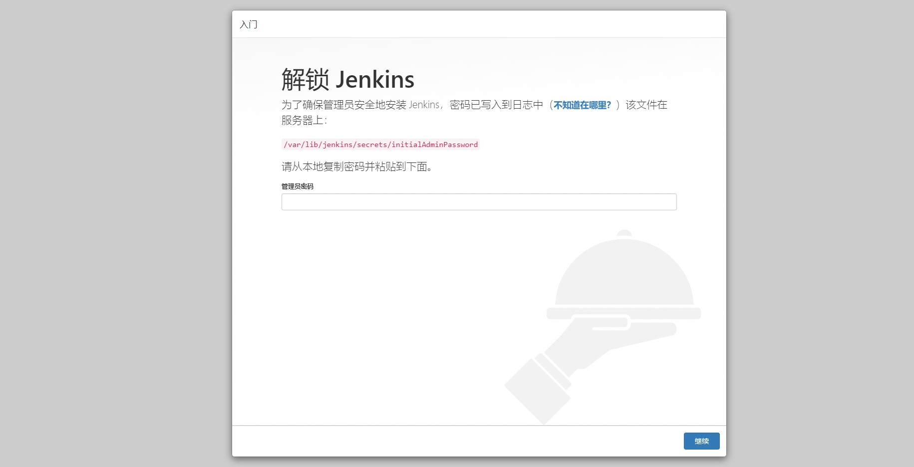
# 安装 DotNET6 SDK
# 安装 .NET 之前，请运行以下命令，将 Microsoft 包签名密钥添加到受信任密钥列表，并添加 Microsoft 包存储库。 打开终端并运行以下命令：
sudo rpm -Uvh https://packages.microsoft.com/config/centos/7/packages-microsoft-prod.rpm |
# .NET SDK 使你可以通过 .NET 开发应用。 如果安装 .NET SDK，则无需安装相应的运行时。 若要安装 .NET SDK，请运行以下命令：
sudo yum install dotnet-sdk-6.0 |
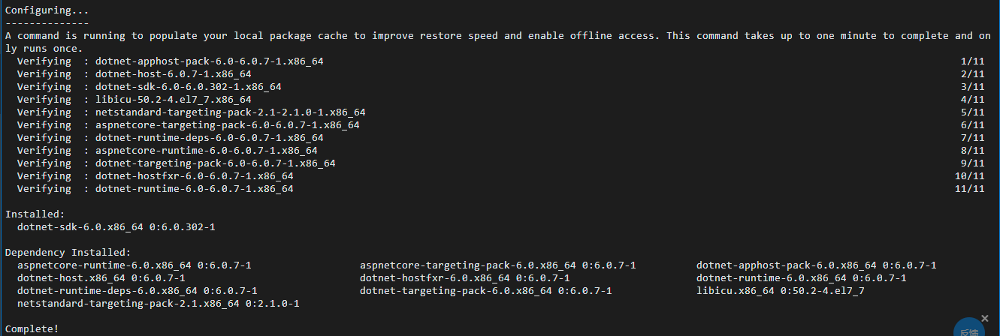
# 安装 docker（设置阿里 yum 源）
sudo yum install -y yum-utils device-mapper-persistent-data lvm2 | |
yum-config-manager --add-repo http://mirrors.aliyun.com/docker-ce/linux/centos/docker-ce.repo |
# 可以查看所有仓库中所有 docker 版本，并选择特定版本安装
yum list docker-ce --showduplicates | sort -r |
# 由于 repo 中默认只开启 stable 仓库，故这里安装的是最新稳定版
sudo yum install docker-ce |
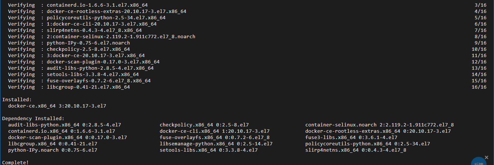
# 启动 docker
sudo systemctl start docker | |
sudo systemctl status docker |
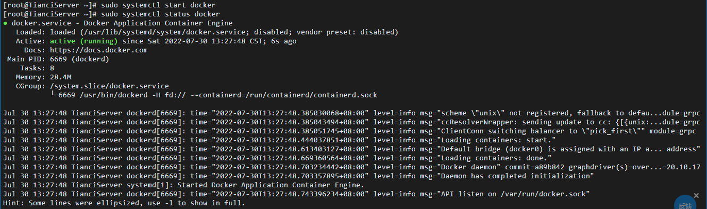
# 安装 Git
yum install -y git |
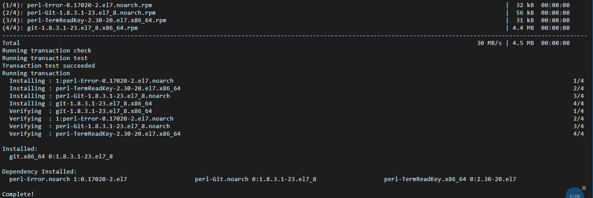
# Jenkins 配置 shell 自动化部署
# 创建 Jobs 配置 Git 选择构建中的执行 Shell
# Jenkins 下的项目目录 /var/lib/jenkins/jobs
# 可以进入对应项目中的 workspace 进行编译，编译通过基本就没啥问题了
# Jenkins 中运行的 shell 命令
#!/bin/bash | |
pwd | |
dotnet restore | |
dotnet build | |
dotnet publish | |
#输出一提示的话 | |
echo "Successfully^_^ ......................................................................................" | |
#输出当前地址，可以在日志中看到当前路径，检查一些路径问题 | |
pwd | |
# 删除所有容器 | |
docker rm -vf $(docker ps -aq) | |
# 删除所有镜像 | |
docker rmi -f $(docker images -aq) | |
#构建镜像命令 | |
docker build -t dotnet6api . | |
#运行镜像 | |
#--naem dotnet6api 是容器名称 | |
#dotnet6api 是绑定的镜像名称 | |
#5000 是对外暴露的端口 | |
#80 是 docker 内部绑定的端口 | |
docker run -d -p 5000:80 --restart=always --name dotnet6api dotnet6api |
# 首次 Jenkins 构建会报错，报错信息 dial unix /var/run/docker.sock: connect: permission denied
# 添加当前用户到 docker 用户组 ${USER} 指用户名 | |
sudo gpasswd -a ${USER} docker | |
# 查看用户组下用户，检查添加是否成功 | |
cat /etc/group | grep docker | |
# 重启 docker 服务 | |
sudo service docker restart | |
# 切换当前会话到新组【group】或重启会话 | |
newgrp - docker | |
# 更改文件权限 | |
sudo chmod 666 /var/run/docker.sock |
# 再次构建项目
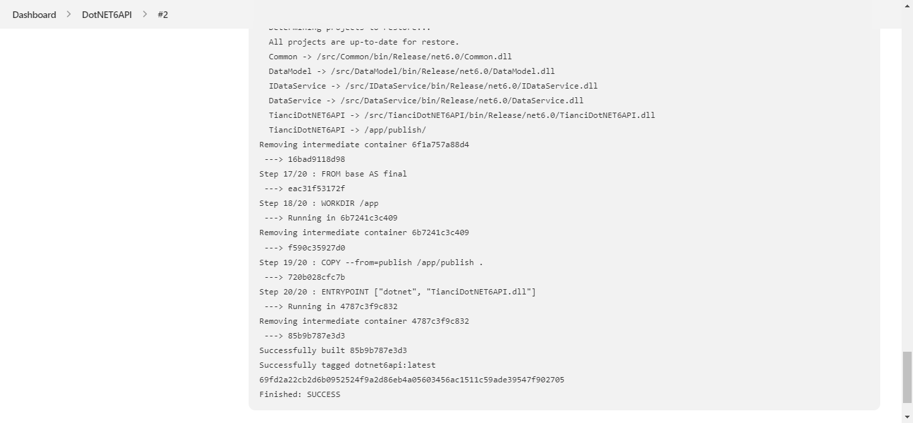
# 输入 IP 加端口号项目运行正常
# 踩到一个小坑，因为日志用的是 Log4net，而日志文件名叫 Log4net.Config 中间有大写
# 最后编译报错找不到 log4net.config，后面把文件名改为小写即可通过了
# DockerFile 是通过 VS 自动生成的没有任何修改，将其移动到解决方案 sln 同级目录即可
# docker 基本命令
# 查看所有镜像
docker image ls |
# 查看所有容器
docker ps -a |
# 停止指定容器
docker stop 容器名 |
# 删除指定容器
docker rm 容器名 |
# 删除所有容器
docker rm -vf $(docker ps -aq) |
# 删除指定镜像
docker rmi 镜像名 |
# 删除所有镜像
docker rmi -f $(docker images -aq) |
# 停止 Docker 服务并查看运行状态
service docker stop | |
service docker status |